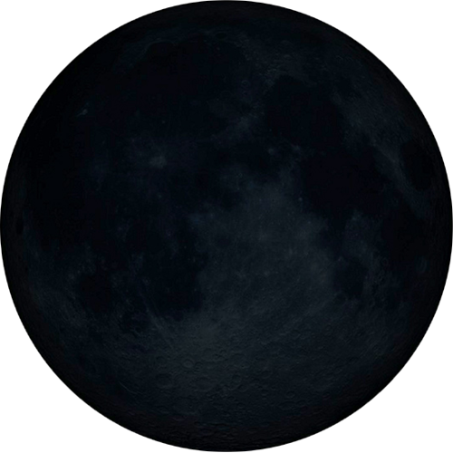
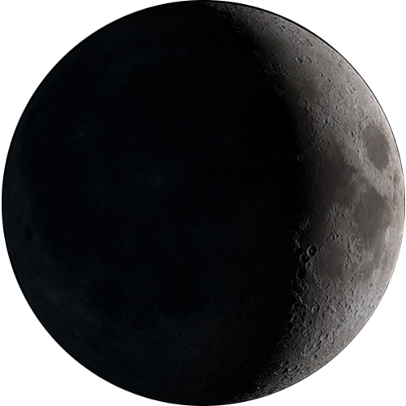
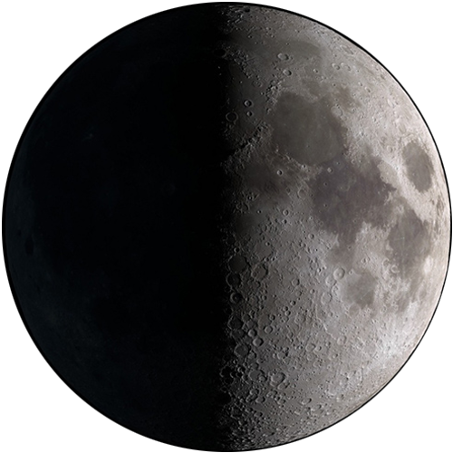
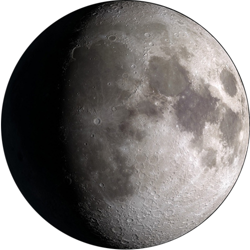
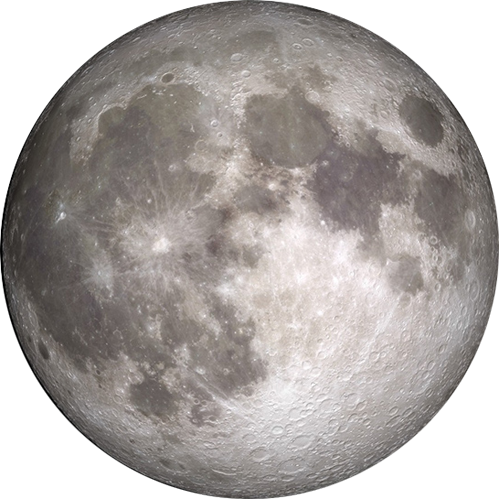
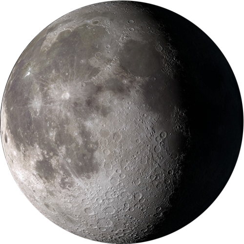
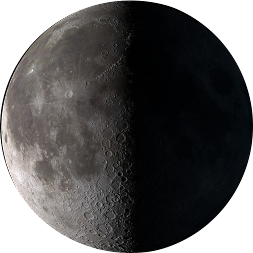
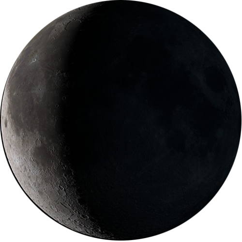

Because it takes about a month for the moon to orbit Earth, a New Moon occurs about once a month. During this phase the moon is between Earth and the sun which means that the lunar half we see is not illuminated. The moon becomes almost invisible in the night sky.

phase01
New Moon

phase02
Waxing Crescent
The Waxing Crescent is the second phase in the Moon cycle. Waxing means to grow or increase, and during this phase the area illuminated on the surface of the Moon resembles the shape of a crescent.

phase03
First Quarter
The First Quarter, or Half Moon, is named for it's 1/4 orbit around the Earth, and because only half of the Moon is visible. The Earth, Moon, and Sun are at a right angle during this moon phase causing there to be very little effect on the ocean's tides. The angle of the Earth, Moon, and Sun is almost perpendicular making the gravitational pull on the tides cancel each other out. The Earth's tides at this point are decreasing. In most parts of the world this Moon phase can be seen in the middle of the day, especially in the northern hemisphere.

phase04
Waxing Gibbous
The fourth lunar phase is the Waxing Gibbous. The word "gibbous" comes from Latin for "hump" and has been used to describe rounded or convex shapes. During this phase the Moon is almost at it's fullest.

phase05
Full Moon
During the Full Moon, the Earth, Moon, and Sun are in a straight line causing the surface of the Moon to be fully illuminated, making the Moon's surface completely visible from Earth. This Moon phase has the strongest gravitational pull on the Earth's tides causing them to be at their highest high points and their lowest low points.

phase06
Waning Gibbous
Waning Gibbous is the sixth phase of the lunar cycle. The term waning means to decrease, as the illuminated surface we can see of the Moon begins to decrease. The waning and waxing Moon phases do not usually have a symbol on calendars as it's an intermediate Moon phase.

phase07
Last Quarter
The Last Quarter, or Third Quarter, Moon phase means that the Moon has completed 3/4 of its orbit around the Earth. Just like the First Quarter, the Moon, Earth, and Sun are at a right angle causing the Sun and Moon to pull in different directions. The Last Quarter Moon has the smallest effect on the ocean's tides.

phase08
Waning Crescent
The Waning Crescent is the eigth and final phase of the lunar cycle. The area illuminated on the surface of the Moon has significantly decreased, and signifies the end of the lunar cycle.